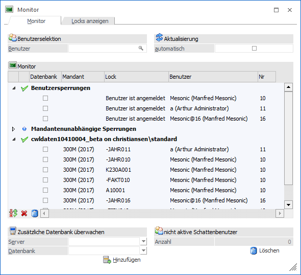
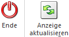

Im Menüpunkt
1 WinLine ADMIN
1 Monitor
bzw.
1 WinLine START
1 Datei
1 Monitor
wird angezeigt, welche Benutzer zurzeit im Programm arbeiten und welche Daten in Verwendung sind, wodurch dieses für den Zugriff von anderen Benutzern gesperrt werden müssen.
Hinweis
Wird der jeweilig genutzte Programmbereich vom Anwender ordnungsgemäß verlassen, so werden auch alle Lock-Einträge automatisch eliminiert (z.B. sobald der Datensatz nicht mehr in Verwendung ist). Ist aber bei einem der Benutzer ein Systemabsturz eingetreten (z.B. durch einen Stromausfall), dann bleibt der Benutzer für das Programm weiterhin eingeloggt. Dieses würde bedeuten, dass der gerade bearbeitete Datensatz nicht wieder automatisch freigegeben wird und diese Locks manuell im "Monitor" gelöscht werden müssten.
Achtung
Es sollte nach einem Systemabsturz unbedingt der Datenstand überprüft werden. Nur dann macht es auch Sinn die Daten weiter zu bearbeiten und weiterhin zu sichern.

Das Fenster ist in die folgenden Bereiche unterteilt, welche in den nachfolgenden Kapiteln detailliert beschrieben werden:
ü Register "Monitor"
In dem Register
"Monitor" werden alle WinLine-Locks für alle angebundenen Datenbanken
angezeigt.
ü Register "Locks anzeigen"
In dem
Register "Locks anzeigen" werden alle vorhandenen SQL-Prozesse/Locks für alle
angebundenen Datenbanken angezeigt.
Buttons

Ø Ende
Durch Drücken des Buttons "Ende" oder der ESC-Taste wird das Fenster geschlossen.
Ø Anzeige aktualisieren
Ist der automatische Refresh deaktiviert, dann kann durch Anklicken dieses Buttons die Lockingtabelle neu eingelesen werden.